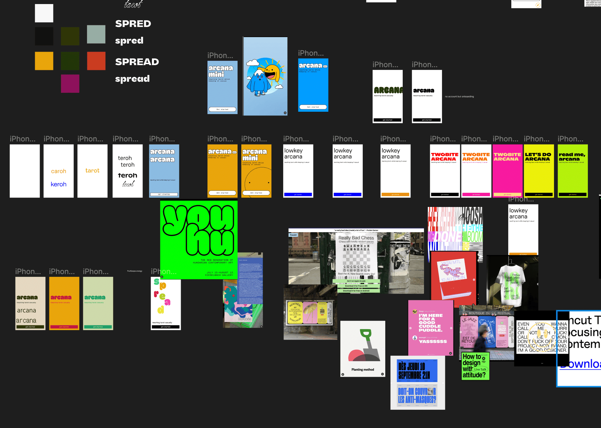

Arcana Mini is an all-in-one digital tarot reading companion for more accessible reflection and guidance. Rather than using a virtual deck, the application is paired with a physical deck to archive tarot readings. Users can read definitions and tips inside the app’s guidebook for easy access during a tarot reading. After performing a spread, users can take a picture and write a reflection for their work to save it.
This was a 2 person project developed over 7 weeks. My partner and I were responsible for creating the concept, visual style, flow, and executed it through Android Studio and Java.
Selecting an idea for the app was the hardest part of the entire project. It is hard to come up with app ideas that are original because there are so many apps available on the market already. I came up with the idea for this app through my own experience reading tarot cards and not having a place to document my readings.
The first week of this project we spent refining the app proposal and identity. We worked in Figma to create a mood board and basic wireframes to capture the idea of the app.
Once our proposal was accepted, we worked on the flow of the app. This was crucial because the structure of our app in Android Studio would be informed by the flow and activities that the app needs to have.
We also set up our Git workspace in this first week so that we could collaborate on our code. We set up two branches for ourselves and pushed our individual progress before merging to the main shared branch.
Here are some examples of how our work evolved over time. The calendar went through a few iterations of design, and changed as it was implemented in Android after testing it on a phone to see what worked best visually. The onboarding also went through some changes, though in this case the design stayed virtually the same but we added more content to it after deciding that the app needed a little more functionality.
This project was not without its share of trouble. A few key points of friction for us were pre-populating an SQLiteDatabase and trying to implement fragments early on in development before we had a strong understanding of the app’s structural needs and how fragments work.
SQLiteDatabases are ideal for storing user data, like the date and content of a user’s tarot reading. We chose to also use one to hold all of the content for the guidebook. This meant that the database couldn’t start empty and we had to find a way to load a pre-populated database. We managed to do so after researching and testing for almost a week. This was because an SQLiteDatabase was not the optimal choice for this usage, but the course requirements were outdated and weren’t teaching us the ideal current methods so we worked with what we had.
Fragments allow you to change the content of an activity by changing out chunks of content. This is the more common approach to structuring apps in Android, but it is also a little more complex than what we were learning at the beginning of this class. When we tried implementing them from the start, we found ourselves in a mess of code and it was very counterproductive. We instead built the app out of regular activities and later refactored it into fragments in one of the last weeks of the project. This was much easier, because by that point we had a strong grasp of the Android studio workflow.
This project taught me a lot. I haven’t worked on an app before so the environment of Android and the process were unfamiliar to me. Beyond the technical side, the process of coming up with a profitable app idea was very challenging and made me respect the work that goes into app development a lot more. I also learned a lot about using Git to collaborate. I have used it before, but with each project I learn something new. Also, I found that my partner’s approach to coding was different from mine. This meant that if we each did separate work and tried to combine it, the code could get confusing. This ultimately taught me more and broadened my methodology.